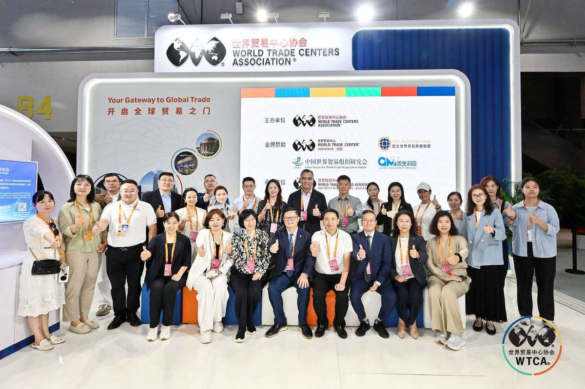
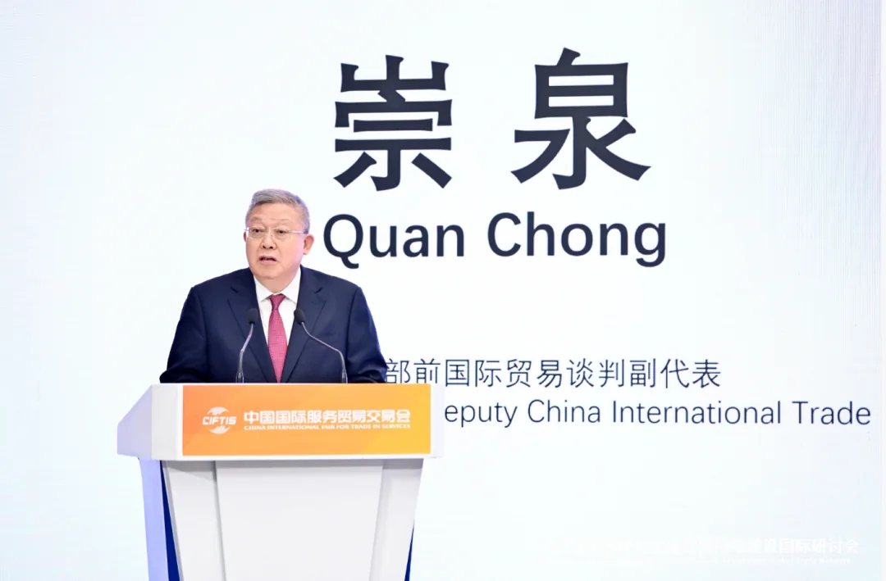
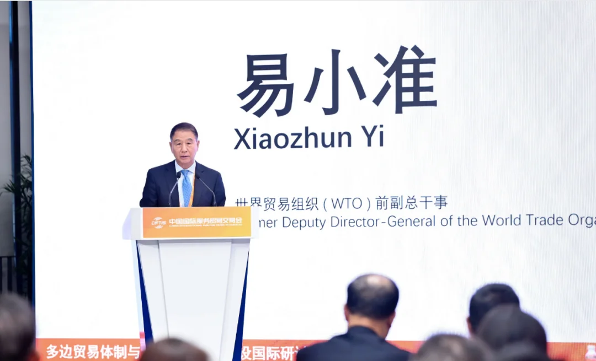
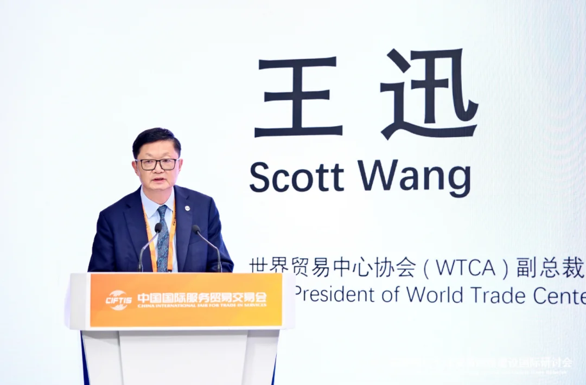
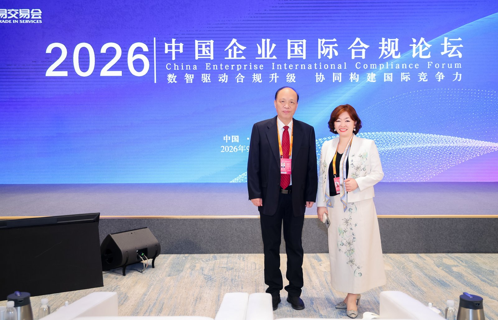
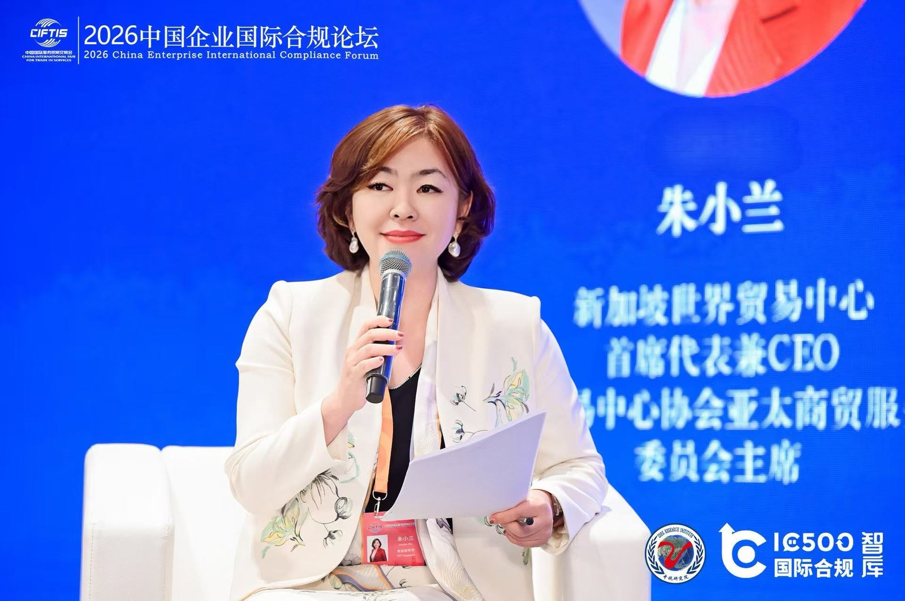

In the golden autumn of September, the 2026 China International Fair for Trade in Services (CIFTIS) officially opened at the Beijing Shougang Park. The World Trade Centers Association (WTCA) is one of the five core international organization partners of CIFTIS. During the event, WTCA member World Trade Centers from multiple cities gathered at the dedicated WTCA pavilion. Those few days, I spent more time at the booth than sitting inside the conference halls.

International Symposium on the Multilateral Trading System and Global Trade Network Building
The "International Symposium on the Multilateral Trading System and Global Trade Network Building," co-hosted by the World Trade Centers Association (WTCA) and the China World Trade Organization Research Society (CWTO), was held on the afternoon of September 10. The conference was supported by the China World Trade Center and the Beijing Association of Trade in Services. Chong Quan, former Deputy China International Trade Representative, attended and delivered remarks, while Yi Xiaozhun, former Deputy Director-General of the World Trade Organization (WTO), delivered the keynote speech. Speakers from the International Trade Centre (ITC), the British Embassy in China, the Australian Embassy in China, and the United Nations Industrial Development Organization (UNIDO) also delivered keynote addresses. The conference also featured roundtable dialogues titled "Expanding High-Level Opening-Up and Multilateral Trade Rules" and "The WTC Network and Global Trade Development." More than a hundred representatives from government, business, and academia gathered to explore the value of the multilateral trading system and global networks. I listened to the entire session from the audience, and the deepest impression on me was actually quite simple: the multilateral trading system sounds grand, but for an individual company, it comes down to one thing — when entering an unfamiliar market, is there someone there to catch you?



2026 WTCA Chinese-Speaking Regions Conference
As part of the "2026 WTCA Chinese-Speaking Regions Conference," the symposium attracted participation from more than ten World Trade Centers across the Chinese-speaking regions and nearly 40 representatives. Mr. Wang Xun, Vice President of WTCA, delivered remarks on behalf of the organizers. Li Mingxing, WTCA Council Member, Standing Executive Director of CWTO, and Chairman of the Asia-Pacific World Trade Business Alliance, moderated the conference. Shen Bai, WTCA Council Member and Chairman of the Shenyang World Trade Center, moderated the roundtable dialogue, with Zhang Ke, Chairman of WTC Singapore, Hao Liyun, Vice Chairman of the Tianjin World Trade Center, Zhao Hongjie, Vice Chairman of the Chongqing World Trade Center, and Yin Jinrui, President of the Nanning World Trade Center, joining the discussion. As Secretary-General, what I care more about is this: can these World Trade Centers within the Chinese-speaking community truly refer business to one another, rather than each operating in isolation.


WTC Singapore Deeply Engaged in Multiple Events
During this CIFTIS, WTC Singapore was deeply involved in multiple events: on September 10, Chairman Zhang Ke attended the "International Symposium on the Multilateral Trading System and Global Trade Network Building"; on September 11, Zhu Xiaolan, Chair of the WTCA Asia-Pacific Trade Services Member Advisory Council and Chief Representative and CEO of WTC Singapore, attended the "China Enterprise International Compliance Forum," and was invited to join the new cohort of experts at the IC500 International Compliance Think Tank and the Beijing Zhongshui Compliance Information Science Research Institute. Together, they advance international trade in services to new heights, strive to enhance the quality, efficiency, and innovation of the services sector, and promote the mutual reinforcement of the services industry and trade in services — building consensus and contributing practical solutions for Chinese companies' high-level "going global," and better empowering economic and social development. At the end of the day, all these appointments and speeches revolve around one thing: helping Chinese companies avoid the detours they need not take when going global.

WTCA Pavilion: WTC Singapore Officially Debuts
At the World Trade Centers Association (WTCA) pavilion, WTC Singapore officially debuted under the theme "Connecting Capital, Innovation, and Global Markets," showcasing its worldwide economic and trade network and three core businesses. On the afternoon of September 10, Zhu Xiaolan delivered a speech at the "Rooted in Free Trade, Connecting the Globe" themed sharing session. She extended an invitation to the business representatives present: when Chinese companies plan their global footprint, WTC Singapore is willing to be the "first stop" for going global. That was also the line I repeated most during those days.

This CIFTIS was held from September 9 to 13 at the Beijing Shougang Park, attracting over 1,830 enterprises and featuring a "Going Global Zone" for the first time. Since its founding in 1970, WTCA has grown into an international economic and trade network comprising World Trade Centers from more than 90 countries and regions and over 300 cities, known as the "Business United Nations"; WTC Singapore is WTCA's sole authorized member in Singapore.
01 A Global "Business United Nations" Network
In her speech, Chair Zhu Xiaolan recalled that the world's first World Trade Center was born in New York in 1970, led by a member of the Rockefeller family. Over the past half-century and more, World Trade Centers have taken different forms around the globe: Dubai, Seoul, Las Vegas, and Manila are built around convention and exhibition centers; Vietnam carries its industry through industrial parks; and there are also new forms such as universities, science and technology innovation centers, and accelerators — each city configures its business facilities according to its own industries and key sectors.
She noted that, leveraging a World Trade network spanning nearly 100 countries and over 300 cities, WTCA has millions of corporate members and, through a series of services including business clubs, conventions and exhibitions, B2B matchmaking, consulting and training, and business missions, has formed a global business network. "Our mission is to connect global business opportunities," said Zhu Xiaolan. "Network to network — while promoting local prosperity, we connect the process of globalization."
WTC Singapore: Asia-Pacific Hub, Connecting the Globe
02 Three Core Businesses: Serving the Globalization of Chinese Companies
Building on Singapore's locational advantages as a global financial center, a center for science and technology innovation, and a bridgehead to ASEAN, WTC Singapore positions itself as an Asia-Pacific hub connecting global capital, technology innovation, and global markets, and supports corporate globalization through three core businesses:
- International Business Club (WTC ONE Club): a high-end business community bringing together global entrepreneurs, investors, and industry leaders, facilitating cross-border cooperation and resource matching through private events and a member network;
- Going-Global Accelerator (GlobalX): providing one-stop acceleration services for market entry, compliant landing, and localized operations, opening up a two-way channel between ASEAN and China;
- Capital Ecosystem (WTC Fund): connecting early-stage technology and growth-stage projects with industrial capital to build an innovative investment ecosystem of "capital + industry + scenario," accelerating the global footprint.
Chair Zhu Xiaolan pointed out that Chinese companies have entered a new stage of going global, and going global is the defining question of this historical stage that Chinese companies must answer. Relying on the global WTCA network, companies can quickly connect with an international circle of friends; when entering an unfamiliar market, the World Trade Center is the "first stop," helping them connect with local government and business resources, channels, and professional partners.
03 WTC Singapore: The "First Stop" for Going Global, Connecting Global Markets
Through the synergy of industry and ecosystem partners, it presents the practical picture of the WTCA network "connecting the globe."
"When we think of going global, the first stop that comes to mind could well be Singapore. Singapore is not merely a local market — it is surely a gateway to global markets."
— Zhu Xiaolan, Chair of the WTCA Asia-Pacific Trade Services Member Advisory Council, Chief Representative and CEO of WTC SingaporeShe proposed that when companies undertake the underlying design of their global architecture — whether establishing an Asia-Pacific regional headquarters, an international headquarters, or a science and technology innovation center — WTC Singapore, leveraging its locational, policy, and international-rule-transparency advantages, can, capital-led, help more Chinese companies globalize and also help overseas companies enter the Chinese market. I prefer to understand it in one sentence: Singapore is not the destination, but the starting point in a company's global architecture.